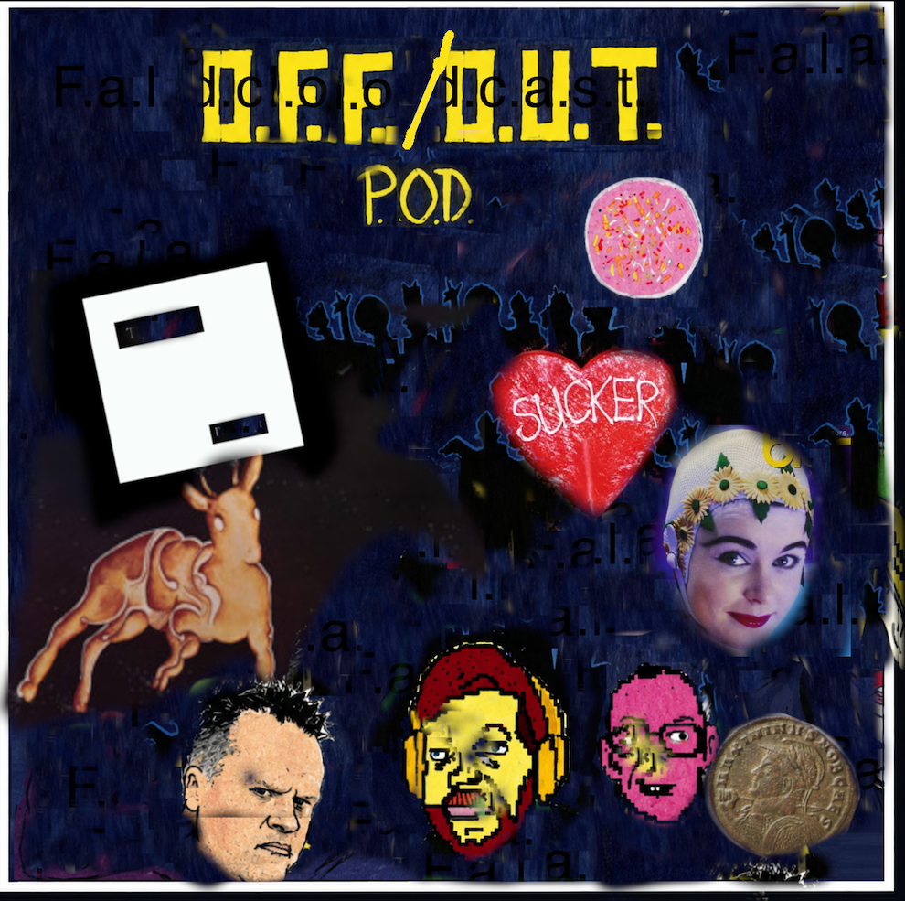

F.A.L.L.O.U.T. Podcast

It's a futile FALL SHOWDOWN.
Breathing really hard and stuttering since 2021!
All 536 songs going H2H! We are in ROUND 4! LAST 64!
A work in progress // Due about 2027
POST PRE POST SCRIPT WORLD!!
All bets are off!! Big love to all them what Fall!
Starring DB, B, THE PEMBERTON WALKER & D.Stew
The episode archive
Original episode numbers where provided in Podbean titles; otherwise a music note. Listed oldest first within each section. Episode 1 includes its edited transcript and critical essay.
F.A.L.L.O.U.T.P.O.D.C.A.S.T. EP1: Walking Music
The inaugural Fall Out episode
F.A.L.L.O.U.T.P.O.D.C.A.S.T. EP2 : Leather Goods, Wigs and Haberdashery
It's only bloody MES in shoulder pads! EP2 of the best(ish) Fall pod out there! Tonight..... Damo Suzuki Vs Put Away // Shoulder Pads Vs Victoria // Feeling Numb Vs Masquerade //&…
F.A.L.L.O.U.T.P.O.D.C.A.S.T.EP3 : Truckin' n Squeakin' in Torquay
Welcome! EP3! Tonight! I'm into CB vs Various Times / You Haven't Found It vs Australians in Europe / Sons of Temperance vs Surmount All Obstacles / & Cowboy Gregori vs Irish.....A…
F.A.L.L.O.U.T.P.O.D.C.A.S.T. EP 4 :It is the whole truth!
Willkommen! EP4 Fer Yer Pleasure! Going head to head tonight.... L.A. vs Slates, Slags, Etc. Ed's Babe vs Yes o Yes M5 Vs He Pep! Systematic Abuse Vs First One Today Who wil…
F.A.L.L.O.U.T.P.O.D.C.A.S.T. EP 5 : Jim, Stevie & Serge on the Trail of Moderninity
An Older Lover Vs Putta Block Bremen Nacht vs Zandra Way Round vs Inevitable Hot Cake vs Bo Demmic !! Episode 5 : Is it fair to mock your girlfriend from the stage? Was MES rea…
F.A.L.L.O.U.T.P.O.D.C.A.S.T.EP6 : There Are No Bigshots on the Rock!
Evenin'. Tonight we have.... Bingo Masters Breakout Vs Pat Trip Dispenser Noel's Chemical Effluence Vs It's a Curse Scareball Vs Janet vs Johnny Get a Summer Song Goin' Vs Age of …
F.A.L.L.O.U.T.P.O.D.C.A.S.T.EP 7 : Urban Shamen, Mystics and the Gullible Trudging Down the Canal Bank
Evenin' People of Earth! Tonight... Hexen Definitive vs Gut of the Quantifier Carry Bag Man vs Twister Ketamine Sun vs Symbol of Mordgan Ronney the Onney vs Jam Song Head to head …
F.A.L.L.O.U.T.P.O.D.C.A.S.T. EP8 : Tossed Duvet Shenanigans of the Aegean!
Hey! Its... CrapRap/Like to Blow Vs Mess of My... Kimble Vs Guest Informant Secession Man Vs Happy Holiday All Leave Cancelled Vs The Bad Stuff Overthin the Fall TM/PLC! Today …
F.A.L.L.O.U.T.P.O.D.C.A.S.T. EP9 : Era 1976 - 1981 Fall Era!
No showdown tonight. Instead, we ramble and kerfuffle through the first six years of the Fall, giving our ill considered and frankly ludicrous opinions on Live at the Witch Trials,…
F.A.L.L.O.U.T.P.O.D.C.A.S.T. EP 10 : Pre TLC....from Bolton
Evenin'! Tonight... English Scheme vs Bug Day, Time Enough at Last vs Hey Luciani!, North West Fashion vs Reprise: Jane / Prof Mick / Ey Bastardo & Latch Key Kid vs Higgledy Pigg…
F.A.L.L.O.U.T.P.O.D.C.A.S.T. EP11 : Cooper Noises from Cold War Void
Tonight! Cary Grant's Wedding vs Choc Stock, US 80s-90s vs Theme from Error Orrori, Devolute vs Birthday Song. and Auto Chip 2014 - 2016 vs Over Over! We are joined…
F.A.L.L.O.U.T.P.O.D.C.A.S.T. E12 : A Hatton & Brazil Vehicle Paul’s Off
Hola! Hideous replicas! Tonight... Impressions of J Temperance vs Iceland Frenz vs Lost in Music Hands Up Billy vs Hot Runes Wolf Kidult Man vs (Birtwistles) Girl in Shop It g…
F.A.L.L.O.U.T.P.O.D.C.A.S.T. E13 : Bad, Sad, Sad & Bad Non-Euclidian Angles
Tonigh! Starring Visible Stu.... Flat of Angels Vs Psycho Mafia Zagreb Vs So-Called Dangerous Spinetrak Vs Levitate Taurig Vs Bury Suoersonik!! Ave it ! U2 Collins loving rotters!…
F.A.L.L.O.U.T.P.O.D.C.A.S.T. EP14 : Bo Rubbishy & Tony Drago's Vvvvvilliagers
Toneet! Hard life in the country Vs Dragos Guilt Idiot Joy Showland Vs Van Plague I Come and Stand at Your Door Vs The Coliseum Mad Mock Goth Vs Insult Song. Regrettable terms …
F.A.L.L.O.U.T.P.O.D.C.A.S.T. EP 15 : Mission Statements of the Ecstatic Twitching Midges
Tonight! Featuring Steve from The Fall in Fives! Repetition Vs Clear off! Squid Law Vs Return Don't Call Me Darling Vs 4 ½ inch Noise Vs What About Us ALL OPINIONS ARE 100% CORRE…
F.A.L.L.O.U.T.P.O.D.C.A.S.T. EP16 : Decoding the Honest Shoe Folk
Tonight! Featuring Lifelong Fall Fan Spencer Harrison! WMC Blob 59 Vs Marquis Cha-Cha White Lightning Vs Crew Filth 15 Ways Vs Rainmaste Monocard Vs O! ZZTRRK Man Heads are shake…
F.A.L.L.O.U.T.P.O.D.C.A.S.T. EP17 : Trainsurfin‘ with the Tuck Shoppe Treats!
Tonight! Slang King Vs Futures and Pasts Auto Tech Pilot Vs Kurios Oranj Spencer Must Die Vs New Formation Sermon Victoria Train Station Massacre Vs Segue and a good time was had b…
F.A.L.L.O.U.T.P.O.D.C.A.S.T. EP18 : Era 1982 - 1984 Fall Era!
Tonight we shamble and grumble through 82-84 in the roller coaster that is the Fall, giving our partially informed and utterly ridiculous perspectives on Hex Enduction Hour, Room t…
F.A.L.L.O.U.T.P.O.D.C.A.S.T. EP19 : Who Hurt You Mark?
Season 3! Return! The NWRA Vs Winter // League of Bald Headed Men Vs So what about it // Ten Houses of Eve Vs This Perfect Day // Second House Now Vs Das Boat //...plus some blathe…
F.A.L.L.O.U.T.P.O.D.C.A.S.T. EP20 ”Is It Are Missing WInner” Formerly ”Between the Cracks”
Tonight! Only For the Hardcore Only!!! Those weird tunes that fell between the tracks...are they a missing winner?? Featuring: Afternoon Disco, Crack House, Gapa, He talks, Countdo…
F.A.L.L.O.U.T.P.O.D.C.A.S.T. EP21 : A Barndance in A Village Hall Where People Are Getting Stabbed in The Back Off Camera & There‘s Some Kind of Generational & Also Class Based Warfare Going On In The
..Guise of An Olde Timey Ritual. // TONIGHT!! // 2x4 Vs And This Day // Oswald Defense Lawyer Vs Get a Hotel // I'm Not Satisfied Vs Ibis Afro Man // Tommy Shooter Vs Funnel of Lov…
F.A.L.L.O.U.T.P.O.D.C.A.S.T. EP22 : Economy Drive! Relentless Yarbles!! Fibre Packed Glasspants!!!
Tonight!!! Eat Yerself Fitter Vs To NK Roachment // Cab It Up! Vs H.O.W. // Calendar Vs Where's The F@#$@# Taxi &%$# // Portugal Vs Midnight in Aspen // And a big chunk of Can lov…
F.A.L.L.O.U.T.P.O.D.C.A.S.T. EP23 : Tar Gargling Fart Trance!!!!
Tonight!! Ludd Gang Vs I Feel Voxish // There's a Ghost in my house Vs Sinister Waltz // Cyber Insekt Vs Chilinist // Can Can Summer Vs The Past #2.. A week later for Halloween an…
F.A.L.L.O.U.T.P.O.D.C.A.S.T. EP24 : Professional Pan Pipist!! Heretic!! Jackanapes!!!
Toneet!!! Neighbourhood of infinity Vs Spoilt Victorian Child Big New Priest Vs Rod (Jung Nev's) Antidote Vs Kick the Can White Line Fever Vs Recovery Kit Featuring a chunk of St…
F.A.L.L.O.U.T.P.O.D.C.A.S.T. EP25 : Shit King Tubby! (T3 ♥ BA)
Tonight!! // Wings Vs Printhead // Xmas with Simon Vs Overture from Curious Oranj // My Ex-Classmates Kids Vs Recipe For Fascism // Mike Loves Xexagon Vs Stout Man // With a s…
F.A.L.L.O.U.T.P.O.D.C.A.S.T. EP26 :The Fella from Tears for Fears Breathing Down My Neck
TWO NEET!!! Who will reap the rewards of this destruction? Joker Hysterical Face VS Bombast // Shift-Work Vs War // Dr Bucks' Letter Vs Cheetham Hill // Touchy Pad Vs Contraflow…
F.A.L.L.O.U.T.P.O.D.C.A.S.T. EP27 : Era 1985 - 1988 Fall Era!
Tonight!!! The third trek down Fall avenue!! We grill This Nation's Saving Grace, Bend Sinister, Frenz Experiment & I Am Kurious Oranj!! IS THE BEST OF TIMES OR IS THE ROT SETTING…
F.A.L.L.O.U.T.P.O.D.C.A.S.T. EP28 : Hark! A Very Fall Christmas Special!
Does what it says lad! It's us lot talking about the Fall and Christmas and all that. Playing Christmastide family favourites and playing party games and all that!
F.A.L.L.O.U.T.P.O.D.C.A.S.T. EP29! : Red Haired Lad in a Jump Suit Holding one of those Braces You Wear When Your Spine’s Broken
Tonight!! Back!! Again!! Fit and Working Again Vs God Box Mr Pharmacist Vs Birmingham School of Business School Last Chance to Turn Around Vs Middle Class Revolt! Mountain Energie …
F.A.L.L.O.U.T.P.O.D.C.A.S.T. EP30 :The Only Way to Get Your J!zz Wings!
T'neet! Pay Yer Rates vs Mother Sister Entitled Vs Legend of Xanadu On my own Vs One Day Theme From Sparta FC Vs YFOC Slippy Floor. Featuring Al's Brother Andrew! He's Come out s…
F.A.L.L.O.U.T.P.O.D.C.A.S.T. EP31 : It’s Actually A Room Adjacent to the Library!
TONITE! Cruisers Creek vs Just Step S'ways Hit the North Pittsville Direkt Touch sensitive Vs Jungle Rock Hittite Man Vs Junger Cloth!! And featuring special guest Dannyno!
F.A.L.L.O.U.T.P.O.D.C.A.S.T. EP32 : Gondolas & Helicopters on the Outskirts of Leigh
Helooo! Toneet... Frightened Vs Stephen Song Life Just Bounces Vs Wrong Place Right Time Stay Away (Old White Train) Vs Crop Dust Venice with the Girls Vs Kinder of Spine Starri…
F.A.L.L.O.U.T.P.O.D.C.A.S.T. EP33: MES of My Mind : The Solo Bracket!
Tonight!! The first episode of round one of the MES solo showdown. We weight up 30(!) tracks from the Post Nearly Man & Pander! Panda! Panzer! LPs as well as Von Sudenfed, Elastica…
F.A.L.L.O.U.T.P.O.D.C.A.S.T. EP34 : Mr Gates is Aghast!
T'neet! Rolling Danny Vs New Face in Hell Just Waiting Vs I’m Frank Early Life of Crying Marshal Vs Pearl City Pre MDMA Years Vs Remainderer G.Vincent, H.WIlliams, F.Zappa and C…
F.A.L.L.O.U.T.P.O.D.C.A.S.T.EP35 : Jauntily Twerkin’ Over Your Fragile Bones
Toneeet Hotel Bloedel Vs Middle Mass British People in Hot Weather Vs LadyBird (Green Grass) The Aphid Vs Pine Leaves Open The Boxoctosis Vs Laptop Dog And a big dollop of H.P. Lov…
F.A.L.L.O.U.T.P.O.D.C.A.S.T. EP36 : Cubist Cupboards Erupting in FeckenSchauers of Palm Fronds
Tonight!!! No Christmas for John Quays Vs In my Area The War against intelligence Vs Dktr Faustus Anecdotes + Antidotes B# Vs City Dweller Green Eyed Loco Man Vs Scenario and Joi…
F.A.L.L.O.U.T.P.O.D.C.A.S.T. EP37 : Era 1989 - 1992 Fall Era!
Woo! Seminal Live! Extricate! Shift Work! & Code: Selfish! Bramah was back...and then he wasn't! Ladies and gentlemen, we present....The Dave Bush Era. Tread carefully.
F.A.L.L.O.U.T.P.O.D.C.A.S.T. EP38 : O Manche!
We're back!!! Tonight Psykick Dancehall vs Pilsner Trail. The Mixer Vs Immortality. I'm a Mummy Vs Das Katerer. Sir William Wray Vs Cosmos7. Belting!! Featuring the brutal lov…
F.A.L.L.O.U.T.P.O.D.C.A.S.T. EP39 : Can Anyone Ever Really Own the Bo Diddley Beat?
Tonight! Oh Brother! Vs Ma(rc) Riley Terry Waite Sez Vs CD Win Fall 2088 F'oldin' Money Vs Distilled Mug Art We Wish You a Protein Christmas Vs Is This New Joined by Ezra's mate S…
F.A.L.L.O.U.T.P.O.D.C.A.S.T. EP40 : Last Chance to Turn Around!
Tonight! We're half way though round one, and against our better judgement we are letting the losers have one last chance...featuring uncut gems such as Mr. Rode, NWRA, Just Waitin…
F.A.L.L.O.U.T.P.O.D.C.A.S.T. EP41 : Like Waking to Find a Dead Crow in the Toilet
Alreeeet! We got Dice Man Vs Its the New Thing, Two face! Vs Butterflies 4 Brains (Whizz Bang), Mad.Men-Eng.Dog Vs Oxymoron... & Black Roof Vs New Facts Emerge featuring Evan…
F.A.L.L.O.U.T.P.O.D.C.A.S.T. EP42 : Splinters Up the Arse, Like Christs on Crossts
Reeeet! What You Need Vs Detective Instinct Cloud of Black Vs The Funeral Mix D.I.Y. Meat Vs The Joke Clasp Hands Vs 986 Generator And a dollop of love for Ivor Cutler!
F.A.L.L.O.U.T.P.O.D.C.A.S.T. EP43 : Is This the Old Story of a Bloated and Complacent Colonial Idiocracy Provoking and Pushing the Bear into Some Ridiculous War?
Aiiiiight!!! Leave the Capitol Vs Vixen Chicago now! Vs Service The Crying Marshall vs Ol' Gang Coach and Hoses Vs Assume ...and a stack of Faust love!
F.A.L.L.O.U.T.P.O.D.C.A.S.T. EP44 : As My Corpse is Interned, I ask, ”Is the Black Dog a Projection of the Oppressor?”
T'night! Backdrop vs The Man Whose Head Expanded Why Are People Grudgeful vs Sleep Debt Snatches Junk Man vs Two Librans Job Search Vs Dedication not Medication ...featuring Stef…
F.A.L.L.O.U.T.P.O.D.C.A.S.T. EP45 : The Atmospheric Mantras of Kenny’s’ Outer Fringes
T'nite! Medical Acceptance Gate Vs Container Drivers The Book of Lies Vs Popcorn Double Feature The Reckoning vs Everybody But Myself Fall Sound Vs Trust in Me Featuring Integr…
F.A.L.L.O.U.T.P.O.D.C.A.S.T. EP46 : Era 1993 - 1996 Fall Era!
Infotainment Scanners! Middle Class Revolters! Cerebral Causticleers! & Light User Syndromers! Jump on board for the most contentious era of The Mighty Fall era...but is it all tha…
F.A.L.L.O.U.T.P.O.D.C.A.S.T. EP47 :I thought the vitamins would change my life
We're back! Tonight... CnCs Mithering Vs Words of Expectations Free Range Vs High Tension Line Hollow Mind Vs Tom Ragazzi plus... a selection of prime live cuts chose by our gues…
F.A.L.L.O.U.T.P.O.D.C.A.S.T. E48 : There’s Nowt Worse Than Crows!
Halloo! Fireworks, Darkness..Cascading.... Muzorewi's Daughter VS Petty Thief Lout Light/ Fireworks Vs Don’t Take the Pizza Susan Vs Youthclub Vs Gotta See Jane Weather Report V…
F.A.L.L.O.U.T.P.O.D.C.A.S.T. EP49 : Tar Gurgling Wee Lads
Hullabaloo! Who Makes the Nazis Vs Mere Pseud Mag A Day in the Life Vs Lucifer over Lancashire Powder Keg Vs Pumpkin Soup & Mashed Potatoes Victrola Time Vs Snazzy ...and a deli…
F.A.L.L.O.U.T.P.O.D.C.A.S.T. EP50 ! :Between the Cracks #2
Covers, instrumentals, cast-offs and runts! All the bits that had nowhere else to go. Can any of them make their way into our hearts and into the competition for real? Including...…
F.A.L.L.O.U.T.P.O.D.C.A.S.T. EP51 : All Gettin’ Agitated in the Avant Garage
HooWee! New Puritan Vs Underground Medicine Edinburgh Man Vs In these Times Bonkers in Phoenix vs Rude all the Time Reformation! Vs Brillo de Facto ...and a big ol' dollop of Mon…
F.A.L.L.O.U.T.P.O.D.C.A.S.T. EP 52: A Pi**take of Gnosis. He is here!
Hullabulloo! Garden Vs Music Scene Extricate Vs And Therein Oleano Vs Bourgeois Town Quit iPhone Vs Remembrance R ...and a carrier bag of Sonics love!
F.A.L.L.O.U.T.P.O.D.C.A.S.T. EP53 : Did UB40 Ever Have a 2 Left Hander Line-Up?
Bleedin' Nora! Lay of the Land Vs In the Park Telephone Thing Vs Paranoia Man in Cheap Shit room Tragic days Vs A Lot of Wind I've been Duped Vs Say Mama starring indie rock vetera…
F.A.L.L.O.U.T.P.O.D.C.A.S.T. EP54 : Oh, Do You Like Chumbawumba?
Bwooooy! C.R.E.E.P. Vs Dresden Dolls The Knight, The Devil & Death Vs Behind the Counter Midwatch 1953 Vs Hark the Herald Angels Jetplane Vs Mask Search ...and some loving scrut…
F.A.L.L.O.U.T.P.O.D.C.A.S.T. EP55 : Era 1997 - 2001 Fall Era!
Levitate! The Marshall Suite! The Unutterable! Are You Are Missing Winner! OOOhhwee Things fall apart, get wyrd and get beautifully and horribly messy. The Nagle era! The Wilding e…
F.A.L.L.O.U.T.P.O.D.C.A.S.T. EP56 : Glastonbury with the Sound Off
We're back! Tonight! Rebellious Jukebox Vs Two Steps Back Gentlemen's Agreement vs Haf Found Borman Jim's "The Fall" Vs Ballard of J. Drummer Loop 41 /Houston Vs Wise Ol' Man Starr…
F.A.L.L.O.U.T.P.O.D.C.A.S.T. EP57 :Strongpot!
Hoorah! Here we are to dance and sing for you! How I wrote Elastic Man Vs Copped It Dead Beat Descendant vs Pumpkin Head Xscapes Shake-Off vs I Wake Up in the City No Respects Rev…
F.A.L.L.O.U.T.P.O.D.C.A.S.T. EP58 : Suspended from Spunky Webbing
Ey up! A Figure Walks Vs Room to Live The Steak Place vs Mollusc in Tyrol Hey Student vs Hurricane Edward Ride Away vs Early Days of Channel Fuhrer ..and an embarrassing gush fest…
F.A.L.L.O.U.T.P.O.D.C.A.S.T. EP59 : The Cheese that Smells Like Rick Witter
OOOHWEEE! Fortress / Deer Park Vs Look Know Gross Chapel - British Grenadiers vs Black Monk Theme Pt1 The $500 Bottle of Wine vs Beatle Bones and Smoking Stones Outro (Reformati…
F.A.L.L.O.U.T.P.O.D.C.A.S.T. EP60 : Mark’ll Link Us! MES Solo Bracket ep 2
Tonight! We dig deep for the second time into the world of the Solo work and Collaborations of Mark Edward Smith. In between knocking out 30 odd LPs with TMF PLC, MES found time fo…
F.A.L.L.O.U.T.P.O.D.C.A.S.T. EP61 :Skiffle with Concussion
Ooh Wee! Kicker Conspiracy Vs Barmy Rose vs Bad News Girl W.B Vs The Acute Fibre Book Troll vs The Usher and starring Steve from the Church of the Fall. Check out his site and go…
F.A.L.L.O.U.T.P.O.D.C.A.S.T. EP62 : A Cast Gone Maude
Tonight! Spectre vs Rector Vs Live at the Witch Trials Strychnine vs The Littlest Rebel Cab driver vs 5 Ivanhoe's Two Pence Cowboy George vs Strangetown ..and joined by my c…
F.A.L.L.O.U.T.P.O.D.C.A.S.T. EP63 :Mooze Boosh Gonkin!
Oi! T'neet. Paint Work Vs Fantastic Life Glam racket vs Bournemouth Runner Unutterable vs Jingle bell rock Protein protection vs O.F.Y.C. Showcase Featuring once more Integral Wi…
F.A.L.L.O.U.T.P.O.D.C.A.S.T. EP64: A Substitute Pod for Christ(Mas)!
Seasonal madness, nonsense and gubbins..some of it even connected to the Fall!
F.A.L.L.O.U.T.P.O.D.C.A.S.T. EP65 : Era 2002-2008 Fall Era!
Don't call it a comeback" We traverse The Real New Fall LP (Formerly Country on the Click), Heads Roll, Reformation Post TLC & Imperial Wax Solvent. It was the best of times, etc…
F.A.L.L.O.U.T.P.O.D.C.A.S.T. EP66 : Skydiving into a S**t Computer Game
Return! Totally Wired Vs Your Heart Out, A Past Gone Mad Vs Guide Me Soft, Bound vs Serum, Breaking the Rules vs Alton Towers ..and only a trek into the blooming Seeds!
F.A.L.L.O.U.T.P.O.D.C.A.S.T. EP67 : Mere Pseud Book Reviewers - Renegade by Some Journo and MES
Tonight, something different. We are accompanied by Dannyno, fount of Fall knowledge, and Rob MacLeod, Integral WIizard (2nd tier) as we attempt to navigate the MES "autobiography"…
F.A.L.L.O.U.T.P.O.D.C.A.S.T. EP68 : He Wasn’t a Musician!
Hola! T'neets. Industrial Estate Vs Disney’s Dream Debased Athlete Cured vs Hilary Das Vulture Ans Ein Nutter Wain Vs Jap Kid Vs You're Not up to Much (!!!) The Wright Stuff vs Ch…
F.A.L.L.O.U.T.P.O.D.C.A.S.T. EP69 : You Know the Pope’s been Finger Freaked
Message for ya! The Classical vs Mansion Jerusalem vs Pinball Machine Blindness vs Exploding Chimney Tempo House Vs Before the Moon With Modular Hobo the tiniest of all wanderer…
F.A.L.L.O.U.T.P.O.D.C.A.S.T. EP70 ! :Between the Cracks #3 : Lost in the Bowels of the Record Company
Again! No! YES! A third (and thankfully) final trip into the bits of the Fall's catalogue that didn't quite make it. We dig into mislaid covers such as Grooving with Mr Bloe, Jack…
F.A.L.L.O.U.T.P.O.D.C.A.S.T. EP71 : It’s Like the Wise Men Say ”Mind Moving Fast is Crazy, Mind Moving Slow is Saint, But Mind Stopped.....is God!”
Ooh la la! On the event of the 66th year of MES we present... My New House Vs Craigness Couples vs Jobless mid 30s Vs Happi Song Mark’ll sink us Vs married 2 Kids I Can Hear the…
F.A.L.L.O.U.T.P.O.D.C.A.S.T. EP72 : Era 2009-2013 Fall Era!
Your Future Our Clutter! Ersatz GB! Re-Mit! Maligned, contested, endured and defended! Is it a late period dip or the start of the last great Fall run? WE WILL BE THE JUDGE OF THA…
F.A.L.L.O.U.T.P.O.D.C.A.S.T. EP73 : Indie Vs Major Debate!
We return! Featuring the legend Jerry Thackray... Jawbone and The Air Vs Smile Everything Hurtz vs I African Mancunian Groundsboy vs 50 Year Old Man Rowche Rumble Vs No Bulbs SH…
F.A.L.L.O.U.T.P.O.D.C.A.S.T. EP74 : ...And All Who Sail in Her!
Tonight! A departure (radical). We are joined by Mayo Thompson of the Red Krayola, a legend in psyche/art/post-punk rock and all the strains we love. He also just happened to produ…
F.A.L.L.O.U.T.P.O.D.C.A.S.T. EP75 : What Would Modern Elementals Feel Like?
Tonight! City Hobgoblins Vs Solicitor in Studio I'm Going to Spain vs Black Monk Theme Pt2 Youwanner vs I've Seen Them Come ...as we barrel towards the end of round one.... and fe…
F.A.L.L.O.U.T.P.O.D.C.A.S.T. EP76 : A Sort of Shrivelled Jesus
T'niiite! Fiery Jack Vs Couldn’t Get Ahead Living too late /long vs Dog Is Life Blood Outta Stone vs Sing! Harpy A sprained wrist here, a damaged tendon there..but in the end, JU…
F.A.L.L.O.U.T.P.O.D.C.A.S.T. EP77: Keep Flatulizing!
Tonight! it's only bleedin'... Hip Priest vs Papal Visit Arid Al's Dream vs Hot Aftershave Bop Nate Will Not Return vs Amorator! On paper, it all looked so easy...... Featuring…
F.A.L.L.O.U.T.P.O.D.C.A.S.T. EP78 : From Pub to Cock
Last commands!! The final episode of round 1..and what a doozy!!! We have now judged (inaccurately) all 525 songs (appx!) by TMF. It has been a journey filled with regrets in which…
F.A.L.L.O.U.T.P.O.D.C.A.S.T. EP79 : Mere Pseud Book Reviewers #2 - The Rise, The Fall and The Rise by Brix Start-Smith!
Tonight! Joined by Fall polymath Dannyno, we attempt to get to grips with the Brix book! Repeated trips to Disney Land, interspersed with superstar violinist dalliances, prime tim…
F.A.L.L.O.U.T.P.O.D.C.A.S.T. EP80 :He is....
Tonight!.. I can barely believe it..! Yes..it is Damo Suzuki talking on instant composition, Stockhausen's helicopters, Kanye West and how everyone needs a bit of dynamite in their…
F.A.L.L.O.U.T.P.O.D.C.A.S.T. EP81 :The Book of Truth! Second Chance Bag #2
T'night! Last chance for these lads! Rebellious Jukebox, The Man Whose Head Expanded, Pumpkin Soup and Mashed Potatoes and so many many more tracks that none of us can believe went…
F.A.L.L.O.U.T.P.O.D.C.A.S.T. EP82 : Era 2014-2018 Fall Era!
And so we arrive.... Sub-Lingual Tablet and New Facts Emerge! The last two shots in the canon...and what a way to go out. Join us as we delve into the final victory lap of TMF. 10 …
F.A.L.L.O.U.T.P.O.D.C.A.S.T. EP83 : Confidence Glasspants! The Frustrating & Satisfying World of the Fall
We are back! Round two begins! Gramme Friday VS Pat Trip Dispenser Damo Suzuki Vs Australians in Europe The Quartet of Doc Shanley Vs The Past #2 and we've only got out hero Ben …
F.A.L.L.O.U.T.P.O.D.C.A.S.T. EP84 : Corset Purchase Incident!
T'neet M5#1 Vs Mountain Energie Hexen Definitive / Strife Knot Vs Mess of My Inevitable vs Last Commands of Xyolthrep And Wigan Legend Sean droppin in! Also. Cash here! New Bonu…
F.A.L.L.O.U.T.P.O.D.C.A.S.T. EP85 : Come on Eileen Part 2!
Toneeet! Round 2! Marquis Cha-Cha Vs Slang King Secession Man Vs Chino Pay Yer Rates Vs Just Step Sways ..and that's all you need!!! Also, come and see the play "Hey Luciani" th…
F.A.L.L.O.U.T.P.O.D.C.A.S.T. EP86 : Hair Implanted F****King Baboon T***urds
Tonight!!!!! Iceland Vs Auto Tech Pilot Reprise: Jane Prof Mick Vs Blindness Birthday Song Vs Couples vs Jobless Mid-30s Featuring Iain Crawford who just ran his own much better F…
F.A.L.L.O.U.T.P.O.D.C.A.S.T. EP87 : Stick it on a 7 inch with a Football Crowd Singing ”Sweet Caroline”
Hello! Ludd Gang Vs Session Musician // Spinetrak Vs 50 Year Old Man // Two Steps Back Vs A Figure Walks // Nothing is decided, no progress is made! But we do talk about M.R. Ja…
F.A.L.L.O.U.T.P.O.D.C.A.S.T. EP88 : LIFE! CODEX! ALBINO! with Funky Si!
T'night! We talk all things "Hey Luciani!" With top-drawer special guest Funky Si Wolstencroft. The play originally ran for two weeks in London in late 1986 and starred members o…
F.A.L.L.O.U.T.P.O.D.C.A.S.T. EP89 : The Bolton Jarvis Cocker Or Last of the Summer Witch Trials
Tneeet!!! Before the Moon Vs Craigness // Spencer must die Vs Loadstones // Smile Vs No Bulbs // with Ezra's Mate Martin guesting aka Fidel Villeneuve of Digital Hardcore Records …
F.A.L.L.O.U.T.P.O.D.C.A.S.T. EP90 : ...like Iggy Pop ...with Una Baines!!!
Yes, we can hardly believe it either!!! Founding Fall member Una drops by for a chat about the music she's made (and is making) and the stories surrounding it....and what a lovely …
F.A.L.L.O.U.T.P.O.D.C.A.S.T. EP91 : Mark E. Smith has let himself go...
T'night!! We're very happy to chat with Lolo from TMF karaoke masters "The Fallen Women" and together we bring down the hammer on... (Jung Nev's) Antidote Vs The Chislers Lie Dre…
F.A.L.L.O.U.T.P.O.D.C.A.S.T. EP92 : TOTALE DESTRUCTION!!!
They said it couldn't, shouldn't, and wouldn't be done!! Tonight, along with the greatest living Fall detective, Dannyno, we exhume the entire Totale mythos!! From the Friel lett…
F.A.L.L.O.U.T.P.O.D.C.A.S.T. EP93 : Fingernails & Hair!! A Halloween Special
Tonight...I can't believe we dallied so long...it's a Halloween special!!! We listen to the spookiest of Fall toonage including, Jawbone, Spectors, Goblins (hob) and hideous replic…
F.A.L.L.O.U.T.P.O.D.C.A.S.T. EP94 : Enough Hit the North Parts to Fill the Entire Car Trip
TNITE. We're back! Hit the North Vs Wrong Place Right Time Disney’s Dream Debased Vs So What About It Where's The Fucking Taxi Cunt Vs My Ex-Classmates Kids And MaxW dropping i…
F.A.L.L.O.U.T.P.O.D.C.A.S.T. EP95 : You’re never gonna keep MES down!
T'neet!! Hip Priest Vs 2nd Dark Age One Day Vs Touch Sensitive Crop Dust Vs Early Life of Crying Marshal Joined by a friend of the show Leon J. Umblesale! give us cash https://ww…
F.A.L.L.O.U.T.P.O.D.C.A.S.T. EP96 : Boris Johnson’s Questionable Whatsapp Missives
T'nite! Fantastic life Vs Fit and Working Again Tempo House Vs Bad News Girl City Dweller Vs Pine Leaves and a very necessary dive into MES's favourite Italo Disco/Techno stuf…
F.A.L.L.O.U.T.P.O.D.C.A.S.T. EP97 : Are the Chicken and Chips Glowing?
T'neet..oh we do get into it! Das Katerer Vs Distilled Mug Art Twister Vs The Classical The Joke Vs Mad Men Eng plus an unwise dive into Kenny Everett's Worst LP in the World …
F.A.L.L.O.U.T.P.O.D.C.A.S.T. EP98 : McShane Root Vegetable Incident!
Weer Back!!! T'nite..deep into round 2! Slates Slags Vs A Past Gone Mad Two Librans Vs Ol' Gang English Scheme Vs Dice Man Wot will win? Pip's mate Greg drops by as Ez is still…
F.A.L.L.O.U.T.P.O.D.C.A.S.T. EP99 : Cary Grant's Centrality to Chaos Majick Has Never Been in Question!
T'neet! The Reckoning VsThe Ballard of J. Drummer Cary Grant's Wedding Vs Kurious Oranj Tom Ragazzi Vs Powder Keg ..Ezra returns!..and we are blessed as Spen drops by with his d…
F.A.L.L.O.U.T.P.O.D.C.A.S.T. EP100 : Fantastic Life!!!!!!
Episode 100. No we can't believe it either! Bren, Pip, Ez & Al are Joined By Steve ChurchoftheFall, Danny No, Max W, Spen, Leon Jumblesale and Ben Wallers drops by as we rank all 3…
F.A.L.L.O.U.T.P.O.D.C.A.S.T. EP101 :Pascal!
T'night we are blessed to have Pascal Le Gras drop by. The man responsible for a whole batch of iconic Fall LP covers including, Middle Class Revolt, Code:Selfish and the Marshall …
F.A.L.L.O.U.T.P.O.D.C.A.S.T. EP102 : Half Watching the Sweeney. Gawd Bless Saturday!!
T'Neet!!! Impression of J Temperance Vs Crew Filth Hark the Herald angels Vs Behind the counter Noels Chemical Effluence Vs My New House and an unhealthy dollop of Link effin' …
F.A.L.L.O.U.T.P.O.D.C.A.S.T. EP103 : MES Solo Bracket ep3 aka The Train Parts 76 to 185
More pain please vicar! I jest, of course. What a treat!! Join us as we return to the world of Mark's solo, collaborative and spoken word excursions, with songs from Von Sudenfed,…
F.A.L.L.O.U.T.P.O.D.C.A.S.T. EP104 : A Past Gone Dave (Exceptional) with Dave Bush!
T'night (Treat)! We were lucky enough to talk to Dave Bush (Lovely). The man who defined the Fall sound in the 90s ("Machines"). We talk the good times (Infotainment Scan) and the…
F.A.L.L.O.U.T.P.O.D.C.A.S.T. EP105 :An Invasion of the Bodysnatchers Dimension Where Everything is Swapped Out and Replaced With Exactly the ThingIt Was Swapped Out With
Tnite! The Man Whose Head Expand Vs Yes O Yes Hurricane Edward Vs Shake-Off The $500 Bottle Vs Unutterable and an exploration of MES' favourite Arthur Machen Bonus episodes on LI…
F.A.L.L.O.U.T.P.O.D.C.A.S.T. EP106 : The Biggest Week Ever! Fall Book Club #3 "The Big Midweek" by Steve Hanley & Olivia Pierkarski Part 1!
T'night! Me, Danny & Al delve into Steve Hanley & Olivia Piekarski's magnificent tome, "The Big Midweek". Join us as we travel with Doc Shanley thru his ups and downs..and oh are t…
F.A.L.L.O.U.T.P.O.D.C.A.S.T. EP107 : Resulting in a Sort of Action Man Scenario Downstairs
T'neet! An Older Lover Vs The Littlest Rebel Flat of Angels Vs Various times Cab driver Vs The Acute ..and part one of our ramshackle exploration of Bramah! Live bonus episode…
F.A.L.L.O.U.T.P.O.D.C.A.S.T. EP108 : Hotdog!
T'neet! Odorous! Athlete Cured Vs Solicitor in Studio Serum Vs Das Vulture Ein Nutter-Wain All Leave Cancelled Vs Outro (27 points) ..and a dig into the second half of M.Bramah's…
F.A.L.L.O.U.T.P.O.D.C.A.S.T. EP109 : So Rare and Fullof Light...with Martin Bramah!
T'neet... He told us everything!!! Just coddin'. We were very lucky to have Martin drop by. We had a splendid chat about the myths of (RnR) history, martial arts, Tony Friel's exi…
F.A.L.L.O.U.T.P.O.D.C.A.S.T. EP110 : The Biggest Week Ever! Fall Book Club #3 "The Big Midweek" by Steve Hanley & Olivia Pierkarski Part 2!The Bassplayer Strikes Back!
Tnight! Dannyno, Al & Treebeards dig into the second half of the fantastic "Big Midweek" by Steve Hanley & Olivia Piekarsky.. featuring Bramah, Bush, Brady and Brix, as top ten LPs…
F.A.L.L.O.U.T.P.O.D.C.A.S.T. EP111 : Comic Sans Sweat n Shiiiiiii
T'neeet..it's about to get heavy! Hard life in the Country Vs Jerusalem Irish Vs Bo Demmick Winter Vs The Mixer ....and wading into some weird n eerie Mark Fisher talk Get live…
F.A.L.L.O.U.T.P.O.D.C.A.S.T. EP112 : ...Microphone Policeman!
T'neet. We're back! Muzorewi's Daughter Vs Fiery Jack Janet, Johnny and Jane Vs First one today Eat Yourself Fitter Vs Joker Hysterical Face Who what will win??!! And we are lu…
F.A.L.L.O.U.T.P.O.D.C.A.S.T. EP113 : How He Wrote How I Wrote How I Wrote Elastic Man
T'neet Theme from Error Orrori vs Jam Song Pledge Vs Age of Chang Latch Key Kid vs Vs Frenz ..and Ezra's got a Futures & Pasts on Albini R.I.P. His Albini playlist here https://…
F.A.L.L.O.U.T.P.O.D.C.A.S.T. EP114 : U-Roy Could Make a Mean Panini!
T'neet! Auto Chip Vs Oleano I'm Going to Spain Vs I African Mancunian ...and a very extensive exploration of MES's favourite Toasters courtesy of our good friend Leon! Here's th…
F.A.L.L.O.U.T.P.O.D.C.A.S.T. EP115 : Building Dry Stone Walls with Toenails!!
T'neet!! Bonkers in Phoenix Vs Hostile Light/Fireworks Vs Service Lucifer over Lancashire Vs Bournemouth Runner Max drops by...and Al only has an F&P on bleedin' Pinky & Perky!! T…
F.A.L.L.O.U.T.P.O.D.C.A.S.T. EP116 : He Couldn't Have Shot Him From There....Could He?
T'neet!! Sons of Temperance Vs Senior Twilight Stock Replacer Oswald Defense Lawyer Vs I Feel Voxish Taurig Vs Higgledy Piggeldy Oswald, Voxish, Taurig, Piggeldy!!! What will go …
F.A.L.L.O.U.T.P.O.D.C.A.S.T. EP117 : The SInger's Singers Singer.
T'bleedin'nite!! Mark’ll sink us Vs Repetition! Neighbourhood of infinity Vs Wings Insult song Vs Black roof ...in a race to the death. Featuring our good friend Steve Titley of C…
F.A.L.L.O.U.T.P.O.D.C.A.S.T. EP118 : Poppycock! ....with Una Baines
T'night. we deviate from our normal path and are blessed to have Una and Julia from Poppycock to talk about the new Poppycock LP "Magic Mothers". The album is chocka with top tun…
F.A.L.L.O.U.T.P.O.D.C.A.S.T. EP119 : Perfume for the Final Minutes. Saggerton!
T'Neet!! Squid law vs Totally Wired Early days of Channel Fuhrer Vs What about us Sinister Walts Vs Garden ..and those are far far closer than they warrant!! What kind of mad dec…
F.A.L.L.O.U.T.P.O.D.C.A.S.T. EP120 : Robtuen of the McNificent 7!
TNeet!! Monocard Vs Weather Report 2 Frightened Vs Xmas with Simon Victoria Train Station Massacre Vs Quit iPhone ...and the mighty are destined to (maybe) fall!! joined by friend…
F.A.L.L.O.U.T.P.O.D.C.A.S.T. EP121 : Get Behind Me TDK!!
T'Neet!!! Guest Informant Vs High Tension Line Victrola Time Vs Das Boat New Face in Hell Vs Cloud of black ..all bets are off!! And friend of the show Spen drop by as well. P…
F.A.L.L.O.U.T.P.O.D.C.A.S.T. EP122 : Pre Face-Stretched Cowell Vs the Manchester Media Elite
T'neet! Susan vs Youthclub Vs Ponto Ladybird (Green Grass) Vs How I wrote Elastic Man Jet Plane Vs Midnight in Aspen Neighbours, DC comics and Hunter S. Bleedin' Thompson...and j…
F.A.L.L.O.U.T.P.O.D.C.A.S.T. EP123 : Freezing!
T'Neet! No Xmas for John Quays Vs Shift-Work Middle Mass Vs Birmingham School of Business School Protein Protection Vs Contraflow ..and bonus!! We got the chance to have a chat wi…
F.A.L.L.O.U.T.P.O.D.C.A.S.T. EP124 : The 19th and Final Exclamation Mark!
T'neet! Amorator! Vs Kinder of Spine Detective instinct Vs Leave the Capitol Assume Vs Fall Sound ..and we're luck to have Steve Pringle dropping by. Get his definitive TMF LP gui…
F.A.L.L.O.U.T.P.O.D.C.A.S.T. EP125 : To The Death!!! A Fallout Halloween Special!!
Tonight, all bets are off!! It's a fallout showdown of alll the spookiest tunes TMF ever did..The List is (Hexen) Definitive!!!!.... Jawbone, Smile, Disney's Dream, Pumpkin Soup an…
F.A.L.L.O.U.T.P.O.D.C.A.S.T. EP126 : The Front Man. It's All About Him Basically!
T'Neet! Kicker Conspiracy Vs So-Called Dangerous Tommy Shooter Vs Dedication not medication R.o.d. Vs Arid Al's Dream ..goalless draw or end to end thriller? With my bud Ash dropp…
F.A.L.L.O.U.T.P.O.D.C.A.S.T. EP127 : HOW??!!
T'neet! Bremen Nacht Vs H.O.W. Recovery Kit Vs I've Been Duped I’m into CB Vs Butterflies 4 Brains (Whizz Bang) ...and my buddy Jess drops in to set us straight!! give us cas…
F.A.L.L.O.U.T.P.O.D.C.A.S.T. EP128 : The Exegesis of Winston O'Booty
T'neet!! Bill is Dead Vs Terry Waite Sez Theme From Sparta FC Vs Cowboy George Haf Found Borman vs Van Plague Joined by PKD aficionado Palmer Eldrich and his three stigmata! Give…
F.A.L.L.O.U.T.P.O.D.C.A.S.T. EP129 : Europs in Australia!
T'Neet Hittite Man Vs Taking Off Lay of the Land Vs Psykick Dancehall Green Eyed Loco Man Vs Mike Love's Xexagon ..and proper spelling be damned! It is all going down as we are…
F.A.L.L.O.U.T.P.O.D.C.A.S.T. EP130 : There Was Nothing to Make Me Want to Listen to That Again
We're back..and still banned from Spotify!! Hey Luciani! Vs Gross Chapel/British Grenadiers Alton Towers Vs Mexico Wax Solvent And This Day Vs Sleep Debt Snatches featuring Al's…
F.A.L.L.O.U.T.P.O.D.C.A.S.T. EP131 : The Man Whose Eraserhead Expanded!
T'neeet!! Pacifying Joint Vs Feeling Numb Popcorn Double Feature vs Dktr Faustus Birtwistle’s Girl in shop Vs Hot Runes and a dip n dive into the death of d.Lynch with our friend …
F.A.L.L.O.U.T.P.O.D.C.A.S.T. EP132 : His Vibrations Will Live On! (The North Will Rave Again)
T'neet!! NWRA Vs Entitled Wise Ol' Man Vs Outro (Reformation) Container Drivers Vs Backdrop ..and Remomorating MES 7 years gone!! RIPMES and fetauring out good buddy Leon. If yo…
F.A.L.L.O.U.T.P.O.D.C.A.S.T. EP133 : Cushy Post EEC Podcast!! Fall Book Club #4 "Have A Bleedin' Guess" by Paul Hanley
Used to be one time it as all Nukey Boars and Muscle Hedonist Vanity..but T'neet', buckle up Fallsters as me, Al and Dannyno take on the wonderful P. Hanley book "Have a Bleedin' G…
F.A.L.L.O.U.T.P.O.D.C.A.S.T. EP134 : Some Things You Can Only Witness Before They Evaporate Out of Existence
T'neet!! Rainmaster Vs IBIS Afro Man Mere Pseud Mag Vs City Hobgoblins Ketamine Sun Vs Youwanner Joined by friend o' the show Spencer H!! Cast for votes here. https://www.patreon…
F.A.L.L.O.U.T.P.O.D.C.A.S.T. EP135 : MES Solo Bracket Ep4 aka The Cod Wars Defined Our Youth!
T'neet yet another entirely necessary detour from the main competition. Yet again we are in the MES solo/collaborations bracket. This fourth and final set of songs means that we ha…
F.A.L.L.O.U.T.P.O.D.C.A.S.T. EP136 : Total (Mike) Leigh Hired!
T'night our commitment to actually having some sort of Fall showdown continues to be questioned we spend an hour or so with Ex-Fall (aren't they all at this point) drummer, Mr Mike…
F.A.L.L.O.U.T.P.O.D.C.A.S.T. EP137 : Some People Stand in the Darkness
..afraid to step into the light! But don't you worry, it's gonna be alreeeet!!!! T'neet... C.R.E.E.P. Vs Fortress / Deer Park Remainderer Vs 4 ½ inch New Puritan Vs i’m Frank ..f…
F.A.L.L.O.U.T.P.O.D.C.A.S.T. EP138 : Oh Dear Friends!!
T'neet! Paint Work Vs And Therein Open the Boxoctosis Vs Brillo de facto Mollusc in Tyrol Vs CnCs Mithering ..with fiends of the shoe Rob & Max to help us along!!! Cash for votes …
F.A.L.L.O.U.T.P.O.D.C.A.S.T. EP139 : Birtwistle (Man on Pod)!
T'neet we were lucky to be able to sit and have a chat with Spenser Birtwistle about his two stints on the TMF drum stool. The lad has seen a fair bit of the world! What a journey…
F.A.L.L.O.U.T.P.O.D.C.A.S.T. EP140 : The Objectively Best Fall Drum Tracks Ever featuring Paul Hanley!
T'neet! Remember a few weeks ago I asked what the best Fall drum tracks were? No? Alright, whatever. Anyway, I had a plan! Find out what the best ten Fall drum tracks were and then…
F.A.L.L.O.U.T.P.O.D.C.A.S.T. EP141 : Slurred & Introspective Readings
T'neet that rarest of real showdowns!! I Come and Stand at your Door Vs Gibbus Gibson Shoulder Pads Vs A Lot of Wind Fibre Book Troll Vs Vs 986 Generator Dan, Al and Brendan fi…
F.A.L.L.O.U.T.P.O.D.C.A.S.T. EP142 : I’ve Never Once Asked for Advice and I’m Not Starting Now. With Tim Kinsella!
Tn'eet!! Telephone Thing Vs Dead Beat Descendent! Is this New Vs Ten Houses of Eve! Featuring my musical hero Tim Kinsella! Of Joan of Arc, Cap'n Jazz, Kinsella & Pulse and many m…
F.A.L.L.O.U.T.P.O.D.C.A.S.T. EP143 : A Nightingale Drummed in Prestwich Square!! with Daren Garrett!!
T'neet!! We are thrilled to chat with Daren Garret of Pram, The Nightingales, Pubic Fringe...and, natch, The Fall!!! (plus many many more)... As you are hopefully well aware, Dare…
F.A.L.L.O.U.T.P.O.D.C.A.S.T. EP144 : Giving MES A F**k*n Reading List!!!!
TNeet!!! Spectre vs Rector Vs Sing! Harpy !!! Prole Art Threat Vs Jawbone and the Air-Rifle !!! As the end of round two approacheth!!! We are Joined by Nicholas Alvarez who was l…
F.A.L.L.O.U.T.P.O.D.C.A.S.T. EP145 : What Year Was Thriller?
T'neeet! The last showdowns of round 2!!! And they said this day would never come!! Riddler Vs Oh Brother Smith & Mark Vs Reece Stick Vs Cosmos 7 Living too late Vs In These Times…
F.A.L.L.O.U.T.P.O.D.C.A.S.T. EP146 : Round 2 Second Chance Bag!!
It's all over for some...but for a select few there is hope!! All of these bad lads were voted out in round two...but here AL, Bren n Dan show mercy to a few gems of the many that …
F.A.L.L.O.U.T.P.O.D.C.A.S.T. EP147 : A Solution Was Only Discovered by my Closely Watching my Brother
It begins!! Round 3.. the last 125!! T'neet!! I’m into CB vs Hurricane Edward Pay Yer Rates Vs Iceland Sleep Debt Snatches vs Van Plague and intrusions by my biological brothe…
F.A.L.L.O.U.T.P.O.D.C.A.S.T. EP148 : Now That He''s Died I Can Appreciate Him a Bit More
TneeeT. Guest Informant vs Riddler Solicitor in Studio Vs Hexen Definitive / Strife Knot The Past #2 vs Telephone Thing and a tribute to late, great B Wilson... auteurs dropp…
F.A.L.L.O.U.T.P.O.D.C.A.S.T. EP149 : Probably My Favourite Song About Someone Conking on a Rollercoaster
T'neet!! Pledge vs Crop Dust Disney’s Dream Debased vs Bournemouth Runner Victoria Train Station Massacre vs Recovery Kit Rock on! And joined by Our Buddy Ian Martin of "Cal…
F.A.L.L.O.U.T.P.O.D.C.A.S.T. EP150 : They Are Like Mostly Post Pre Punk
T'neet 150 Episodes in!!!! Alton Towers vs Free Range Contraflow vs Container Drivers (Jung Nev's) Antidote Vs Powder Keg ..and a far too long diversion into what does and does…
F.A.L.L.O.U.T.P.O.D.C.A.S.T. EP151 : Carry on Clown!
T'neet!!! IBIS Afro Man vs Lay of the Land Spinetrak vs Unutterable English Scheme Vs NWRA Big boys going at it!! With friend of the Show Leon!! and a shallow deep dive into t…
F.A.L.L.O.U.T.P.O.D.C.A.S.T. EP152 : 4 Pints of Banana Liqueur !! (A Sort of) Summer Special!!!
T'neets The Man Whose Head Expanded vs Prole Art Threat Kinder of Spine vs Dktr Faustus Eat Yourself Fitter Vs Serum ...and a romp thru the most Summery of all Fall tracks..s…
F.A.L.L.O.U.T.P.O.D.C.A.S.T. EP153 : Nuggets You WIll Keep for the Rest of Your Life Starring Ajay Saggar!
Tneet!! wiht Ajay Saggar on board we pit Jam Song vs Hip Priest I Come and Stand at your Door vs I am Damo Suzuki Neighbourhood of infinity vs CnCs Mithering head to head! Ajay…
F.A.L.L.O.U.T.P.O.D.C.A.S.T. EP154 : Pipin' Out the Car on Rivvy, Pitch Black, Everyone's Caned...Magnificent!
T'neet!! The Classical vs Frightened Impression of J Temperance vs Terry Waite Sez Ludd Gang vs How I wrote Elastic Man with friend of the show Spen... good good times.. join …
F.A.L.L.O.U.T.P.O.D.C.A.S.T. EP155 : Literally Recalling the Plot!
T'bleedin'neet Susan vs Youthclub Vs Mere Pseud Mag Fiery Jack vs Secession Man Gramme Friday vs Shoulder Pads Easy, right? Wrong!! We have absolutely no idea! Joined by fie…
F.A.L.L.O.U.T.P.O.D.C.A.S.T. EP156 : We're Gonna Put an English Face On It
T'neet! Touch Sensitive vs Smith & Mark Dead Beat Desc Vs Hostile My New House vs (Birtwistle’s) Girl in Shop and featuring Wesley Gonzalez, maker of some of my favourite music in…
F.A.L.L.O.U.T.P.O.D.C.A.S.T. EP157 : No O No!
T'''neeet! Spencer Must Die vs Behind the Counter Blindness vs Ten Houses of Eve Pine Leaves vs H.O.W. and joined by the Detective wiht the Instinct...Dannyno!!! Pay for votes a…
F.A.L.L.O.U.T.P.O.D.C.A.S.T. EP158 : Saw a mouse. He Flapped at my Wife. And the Mouse Did Pay!
Tn'eee't! Tempo House vs Janet, Johnny & Jane M5 vs Repetition! Brillo De Facto vs The Joke Easy right?...WRONG!!! Who will what will even win now?? What have they done? Also w…
F.A.L.L.O.U.T.P.O.D.C.A.S.T. EP159 : Duffoween! Talking "The Otherwise" with Graham Duff (a sort of Halloween special)
T'neet - A spooky(ish) detour! We have a good old chat with Graham Duff who wrote the (as yet) unmade film "The Otherwise" with MES...and also just happened to write one of the be…
F.A.L.L.O.U.T.P.O.D.C.A.S.T. EP160 : There's No Turning Back! Ranking the Covers with the "We Are The Fall" Boys
Oh the incestuous world of Fall podcasts! In between the heavy breathing and stuttering, we found time to meet up with the gentle folks over at the W.A.T.F. pod to casually rank al…
F.A.L.L.O.U.T.P.O.D.C.A.S.T. EP161: How I Wrote The Fourth Movement of the Symphonie Fantastique!
Tn'eeet! New Puritan vs The Reckoning My Ex-Classmates' Kids vs Hard Life in the Country Dr Bucks' Letter vs Last Commands of Xyolthrep Ooh wee..and joined by our buds Vlad J &…
F.A.L.L.O.U.T.P.O.D.C.A.S.T. EP162: From Oprah Winfrey to Tolstoy in the Span of a Line!
Aye! T'neet! Octo Realm/Ketamine Sun vs Distilled Mug Art Two Librans vs Fortress/Deer Park Gross Chapel/British Grenadiers vs Slates Slags and joined by Sprinter legend NJar…
F.A.L.L.O.U.T.P.O.D.C.A.S.T. EP163: Feels Kinds Herman Hesse to Me!
We are back! Big guns!! An Older Lover vs Fall Sound I Feel Voxish Vs Leave the Capitol Wise Ol' Man vs The Acute and featuring our resident PKD expert, Palemr Eldrich! Cash for…
F.A.L.L.O.U.T.P.O.D.C.A.S.T. EP164 : MES Solo Bracket SEMI FINAL 1 : Nice Hearing Mark Smith Over A Blast Beat (Even Though It Was A Very Tame Blast Beat)
T'neet A Semi Final! (Of Sorts)!! Listen to us judge the Best of Non-Fall MES. There's PandaPanzer, DOSE, Mutations, but let's be honest, it's mostly Mouse on Mars-related. Great …
F.A.L.L.O.U.T.P.O.D.C.A.S.T. EP165: FALLOUT BOOK CLUB #5 "You Can Drum But You Can't Hide" By Simon Wolstencroft!
T'Neet Never seen you looking so good, my funky one! We dig into the greatest rock and roll book ever written!! Or at least as good as Steve's!! The crew, joined by DannyNo, had a…
F.A.L.L.O.U.T.P.O.D.C.A.S.T. EP166: (More) Explicit References to Beefheart!
T'neet! Totally wired vs Rod Kicker Conspiracy vs Feeling Numb Couples vs Jobless mid-30s vs Before the Moon With good friend, Maximus! Surely easy choices..no?! Join the chats o…
F.A.L.L.O.U.T.P.O.D.C.A.S.T. EP167: The Saving Grace of TNSG! An Interview with Michael Pollard
T'neet we’re chatting with Michael Pollard, (one of) the artist(s!) behind the cover of This Nation's Saving Grace. We talk about how the artwork came together, working around The …
F.A.L.L.O.U.T.P.O.D.C.A.S.T. EP168: Snare!
T'neet! Rejoice he 'as risen'! Fantastic Life vs Weather Report Sons of Temperance vs Frenz Hittite Man vs Smile joined by the man, the legend that is THE SNARE! Patron gubbins …
F.A.L.L.O.U.T.P.O.D.C.A.S.T. EP169: Many Fond Moshpit Memories
T'neet..were back and it's like we never went away.. theme From Sparta FC vs Mike Love’s Xexagon Marquis Cha-Cha vs Service Spector Vs Rector vs Middle mass big boy show…
F.A.L.L.O.U.T.P.O.D.C.A.S.T. EP170: PRE !PRO! RE! LAPSE!!!
T'neet.. Going to Spain vs Oleano Paintwork vs Jawbone and the Air Rifle Fibre Book Troll vs Lie Dream of Casino Soul and joined by Tim from Prolapse! Good times. Give us some c…
F.A.L.L.O.U.T.P.O.D.C.A.S.T. EP171: 9 CD Reissue of Remit Please!
Tneet..as if we needed to tell you! Early days of Channel Fuhrer vs Lucifer Over Lancashire 4 ½ inch vs Midnight in Aspen Das Boat vs No Christmas for JQ How did any of them (JQ…
F.A.L.L.O.U.T.P.O.D.C.A.S.T. EP172: A Creepy Bo Diddley Jam!
T,neet A Figure Walks vs Cosmos 7!!! All Leave Cancelled vs Dedication not medication Winter vs Backdrop Big boys vs mid boys vs how they still here boys!!.. Join Dan, Al & B…
F.A.L.L.O.U.T.P.O.D.C.A.S.T. EP173: Plenty O Studio Witchcraft
Noel's Chemical Effluence vs Black Roof !!! Hit The North vs Taurig !!! The Walker, The host, DB & Stu descend once more into the ruins... T'neet the lads shovel through another m…
F.A.L.L.O.U.T.P.O.D.C.A.S.T. EP174: Work in Progress Or Three Foot Logger Hard Ohn
Hello and welcome to the F.A.L.L.O.U.T. Podcast! This week, Al B, Db n Stewpot hit (Finally) the end of round 3!!! of Fall tournament and make their calls on three tight(ish) matc…
F.A.L.L.O.U.T.P.O.D.C.A.S.T. EP175: 2nd Chance Bag: Senior Surplus Track Inspectors
Hello and welcome to the F.A.L.L.O.U.T. Podcast! The tournament takes a detour into the Last Chance Saloon, where Al B and DB revisit the song that went out in Round 2 to bring a …
F.A.L.L.O.U.T.P.O.D.C.A.S.T. EP176: FALLOUT BOOK CLUB #6 "The Fallen" By Dave Simpson! Part 1.
Hello and welcome to the F.A.L.L.O.U.T. Podcast! This week, Al B, DB and friend of facts Dannyno descend into Dave Simpson's excellent book The Fallen. What starts as a simple loo…
F.A.L.L.O.U.T.P.O.D.C.A.S.T. EP177: Round 4 — Big Big Boys!
Hello and welcome to the F.A.L.L.O.U.T. Podcast! It’s Round 4 of the futile FALL SHOWDOWN, and we’re down to the last 125 songs or thereabouts. At this point, absolutely anything …
F.A.L.L.O.U.T.P.O.D.C.A.S.T. EP178: The Dream Went Right Back to Base
Hello and welcome to the F.A.L.L.O.U.T. Podcast! Hexen Definitive vs The Past. Crop Dust vsDisney's Dream Debased The FALL SHOWDOWN rolls on into Round 4, with Al B, DB and B fa…
F.A.L.L.O.U.T.P.O.D.C.A.S.T. EP179: Live Static! + Women of The Fall (Take over!!)
The Classical vs Neighbourhood of Infinity Hip Priest vs I Am Damo Suzuki Hello and welcome to the F.A.L.L.O.U.T. Podcast! This week Al B, DB and B are all in the same room, reco…
F.A.L.L.O.U.T.P.O.D.C.A.S.T. EP180: Codename: Lovely Harry
Hello and welcome to the F.A.L.L.O.U.T. Podcast! Kinder of Spine vs Eat Y'Self Fitter NWRA vs Prole Art Threat Al, DB and B return to Round 4 of the futile FALL SHOWDOWN and, for…
F.A.L.L.O.U.T. Podcast EP181: Not (Yet) Fit To Be Seen
RECOVERY KIT VS FREE RANGE Container Drivers Vs Jung Nev's Antidotes. Tneet!! Another two-pronged FALL SHOWDOWN. People of Europa, rejoice and carry your past around!! A deep, d…
F.A.L.L.O.U.T.P.O.D.C.A.S.T. EP182: Hooky but Deeply Mediocre
SHOULDER PADS VS TOUCH SENSITIVE Impression of J Temperance Vs How I Wrote Elastic Man Another FALL SHOWDOWN, with big and tough songs going head-to-head. First up...Shoulder Pa…
F.A.L.L.O.U.T.P.O.D.C.A.S.T. EP183 : FALLOUT BOOK CLUB #7 "The Fallen" By Dave Simpson! Part 2. The Descent!
The lads, joined by Dannyno jump back into Dave Simpson’s The Fallen — and there’s plenty to celebrate: cheeky barking anecodes, bizarre showbiz characters, and all the tiny bits …
F.A.L.L.O.U.T. PODCAST EP 184 — M.E.S. S.F. #2: Kind of a Flo Rider for the 90s
The Horror in Clay vs Slow Down Ronnie // Serious Brainskin vs Heads of Dead Surfers // I Want You vs Cancelled // Glitter Freeze vs Enigmatic Dream // Not Clean vs Inch It's a fu…
F.A.L.L.O.U.T. PODCAST — EP185 - They're Surrounding the House! with Iain Key and the Snare!!
M5 vs Brillo De Facto and. New Puritan vs Hard Life in the Country “I curse your preoccupation / With your record collection!” (With apologies to Savage Pencil) It's…
F.A.L.L.O.U.T. PODCAST EPISODE 186: THE OTHERWISE!! A HALLOWEEN SPECIAL!
🎃 F.A.L.L.O.U.T. PODCAST — EPISODE 186: HALLOWEEN SPECIAL! 🎃 THE OTHERWISE — PERFORMED IN FULL FOR THE FIRST TIME EVER!! This Halloween, F.A.L.L.O.U.T. proudly presents the first…
F.A.L.L.O.U.T. PODCAST — EP187 - The Never-Ending Field
Behind the Counter vs Blindness Pine Leaves vs Janet, Johnny & James Four extraordinary Fall songs. Two utterly ridiculous contests. One increasingly futile attempt to establish …
Blur : Bside the Bsides : EP1. Leisure!
Welcome to Bside the Bsides, where Ian and Brendan go rummaging around the edges of the Blur, digging into b-sides to unpick the sound, the machinery around the band, the impact o…
Blur : Bside the Bsides : EP2. Modern Life is Rubbish!
Ian & Brendan are back for round two of our Blur b-side excavation, and this time it's Modern Life Is Rubbish — the album where Blur stopped chasing the baggy bandwagon and started…
Blur : Bside the Bsides : EP3. Parklife!
Ian and Brendan are back, and this time it's Parklife — Blur's great leap from the melancholy of Modern Life Is Rubbish into music hall, seaside postcards, suburban absurdity and t…
Blur : Bside the Bsides : EP4. The Great Escape!!
BSIDE THE BSIDES — EPISODE 4: THE GREAT ESCAPE! THE WHEELS HAVE COME RIGHT OFF! It's 1995! Blur are the biggest band in Britain, Parklife has gone triple platinum, and the Britpo…
Avid Al’s Scene : NotFall#1
Warning! There is no Fall music in this Episode!!! A completely shameless and self indulgent hour of listening to tunes we like, including Leenalchi, The Bug, Bongwater, Cannibal O…
Avid Al’s Scene : NotFall #2
Warning! There is no Fall in this podcast! Another shameless and self indulgent hour or so of our favourite tunes including Robert Wyatt, Scott Walker, Hasil Adkins, Darondo, Jesus…
NotFall #3 : More Blatherings from Avid Al’s Scene!
Warning! There is no Fall in this episode! Rather, a third batch of self indulgent tunage including (but not limited to!) Yoko Ono, Cutty Ranks, This Heat, Add N to X, Aidan Walsh…
Avid Al’s Scene : NotFall#4 AKA Sample Packs Available$9.99!
WARNING. There is no Fall in this episode regardelss of the feeble attmepts of certain podcast ghosts to connect TMF to this shower! Indulge usm if you will, in two hours of our f…
Non Fall #5 : Dancing on the Typing Keys and Slagging Off Pitch Shifting
🎤 WARNING. Not Fall music in this episode!! Experience an unconventional audio journey in this episode of "Uncharted Soundscapes," a departure from the usual Fall post-punk vibe. J…
Non Fall: Chrimbo Special! A Peck on the Cheek for a Piggie!!
Warning! There is no Fall content in this episode! Hope yer all having a pleasant season...t'neet We drink deep from the Yuletide well. Our favourite Christmas songs... including …
Non Fall : May 2024 - Schooled by Robots
WARNING - No Fall music contained in this episode! But what we do have is the crew exploring ill advised electronic excursions including tracks from Yaaard, Hvratski, Autechre, DJ…
(Sort Of) N.O.T.F.A.L.L. : !! Eat Yule Self Fatter!!! A Fall Adjacent Christmas Special
Bren and Al are jingling all the way with a festive Fallout episode that’s as cheeky as it is cheery! Until Froze shows up!! But it's packed with Fall-adjacent tunes and enough hol…
N.O.T.F.A.L.L. #8 : Arid Al & Damp Dan Present """"DAS FALL IST NOTFALL!!""""
T'neet! No Fall Warning! No Fall contnet in this gubbins. Although we don't like to admit it, there is a world outside of THF..and though most of that world is not very good at all…
N.O.T.F.A.L.L. A Pound's Worth!! A Chrimbo Special of sorts
T'neet ..as is our want...a hour or so of our festive favourites...including Martin Rev, Venetian Snares, Moog Machine, The Andrews Sisters, Ray Charles, X-project, James Chance, T…
N.O.T.F.A.L.L. U.S. & U.K. 80s-90s!!
Welcome to N.O.T.F.A.L.L.—the occasional side project from the F.A.L.L.O.U.T. Podcast, where Al B and DB give Mark E. Smith the week off and play a pile of completely unrelated rec…
N.O.T.F.A.L.L. G.A.(R.E.//V.//E. G.A.)A.G.E. !.!.!
N.O.T.F.A.L.L. — AN ARID AL SPECIAL We're back in the garage! Al and B rummage through a filthy heap of garage rock, primitive racket, forgotten nuggets and assorted musical misde…
F.A.L.L.O.U.T.P.O.D.C.A.S.T. : Thee First Annual Monks Off!
T'neet! Fire and Brimstone!!! While we're on our break between regular seasons, joined by pod faves DannyNo and Max, we decided to indulge ourselves in our first annual Monks Off!…
B.E.E.F.O.U.T. Podcast Episode 1 : Safe as Milk vs Strictly Personal!
T'neet! A detour from our usual F.A.L.L.O.U.T. podcast to pit the songs from the first two Beefheart LPs up against each other. Al, Brendan & Dan tell it like it is.... Play along …
B.E.E.F.O.U.T. Podcast Episode 2 : Trout Mask Replica Vs Trout Mask Replica!
Tneet..as there are som amny goawd dang songs on this behemoth, the crew ranks these gems; Frownland, The Dust Blows Forward ’n the Dust Blows Back, Dachau Blues, Ella Guru, Hair P…
B.E.E.F.O.U.T. Podcast Episode 3 : Lick My Decals Off Baby & Mirror Man Sessions - Rassled & Ranked!
T'neet. The genius follow-up to Trout Mask Replica that is "Lick My Decals Off, Baby." Is it a mature Don, or a man all at sea? All of its tracks are pored over, discussed, and ra…
B.E.E.F.O.U.T. Podcast Episode 4 : Captain Beefheart Spotlight Kid & Clearspot Ranked!
T'neet! B, DB and Al take a deep dive into Captain Beefheart's The Spotlight Kid and Clear Spot—two albums that still split opinion among fans. Coming after the wild, angular chaos…
B.E.E.F.O.U.T. Podcast Episode 5: Unconditionally Guaranteed & Bluejeans & Moonbeams Ranked!
T'neet on't' B.E.E.F.O.U.T. Podcast! This week, Al B and Db tackle what many consider the nadir of Captain Beefheart's career. We're ranking every song from Unconditionally Guaran…
B.E.E.F.O.U.T. Podcast Episode 6: Bat Chain Puller & Shiny Beast Ranked!
Hello and welcome to the B.E.E.F.O.U.T. Podcast! This week, Al B and DB tackle one of the most fascinating "what ifs" in Captain Beefheart history, ranking every track from both v…
B.E.E.F.O.U.T. Podcast Episode 7: Doc at the Radar Station & Ice Cream for Crow Ranked!
Hello and welcome to the B.E.E.F.O.U.T. Podcast! This time Al B and DB take on the final stretch of the Captain Beefheart story, ranking Doc at the Radar Station and Ice Cream for…
B.E.E.F.O.U.T. Pod Episode 8: Odd n Sods Ranked!
The Beefheart Odd ’n’ Sods episode. A rummage through the stranger corners of the Captain’s world — obscure originals, R&B workouts, Zappa collisions, alternate versions, abandone…
S.H.A.G.G.S.O.F.F.!!!!
SHAGGOFF! — THE LONG-THREATENED SHAGGS SPECIAL!! It's finally happened! After years of threats, promises and increasingly worrying conversations, Al, DB and B assemble for the lon…